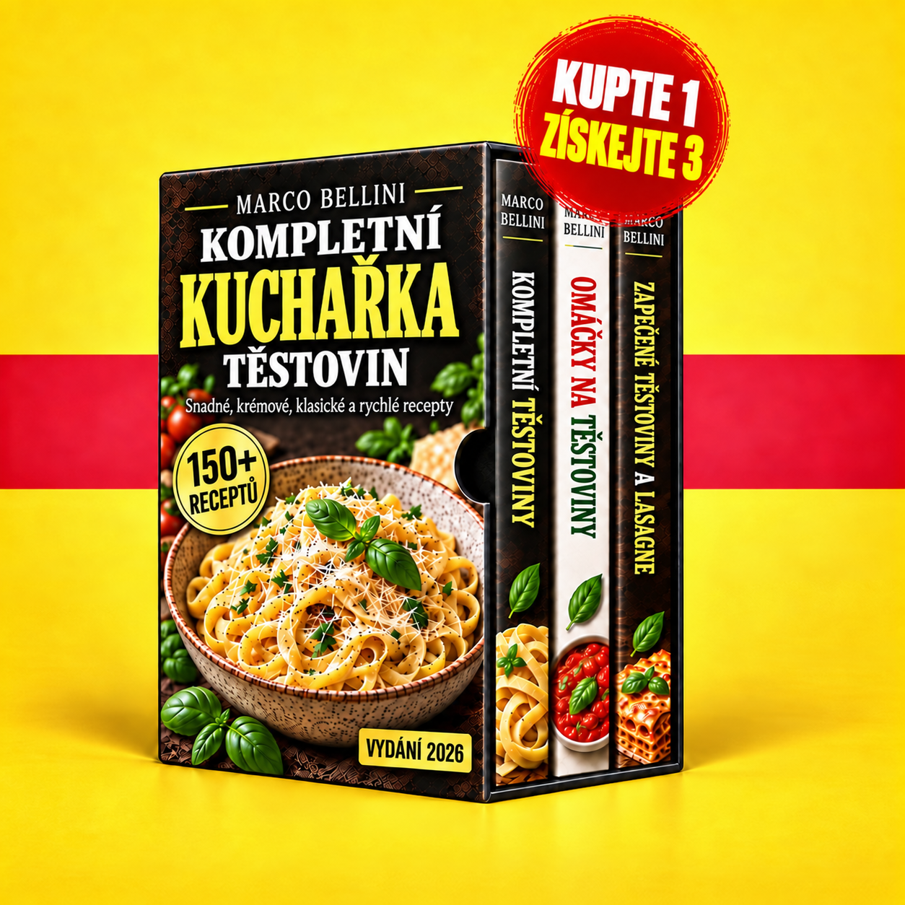

Vítejte ve své kolekci těstovin. Prohlédněte si tři kuchařky s těstovinami, omáčkami a zapékanými pokrmy a vyberte si svůj další recept.

Načítání vašich kuchařek …
Pro používání členské sekce zapněte JavaScript. Soubory PDF můžete také otevřít přímo pomocí těchto odkazů.